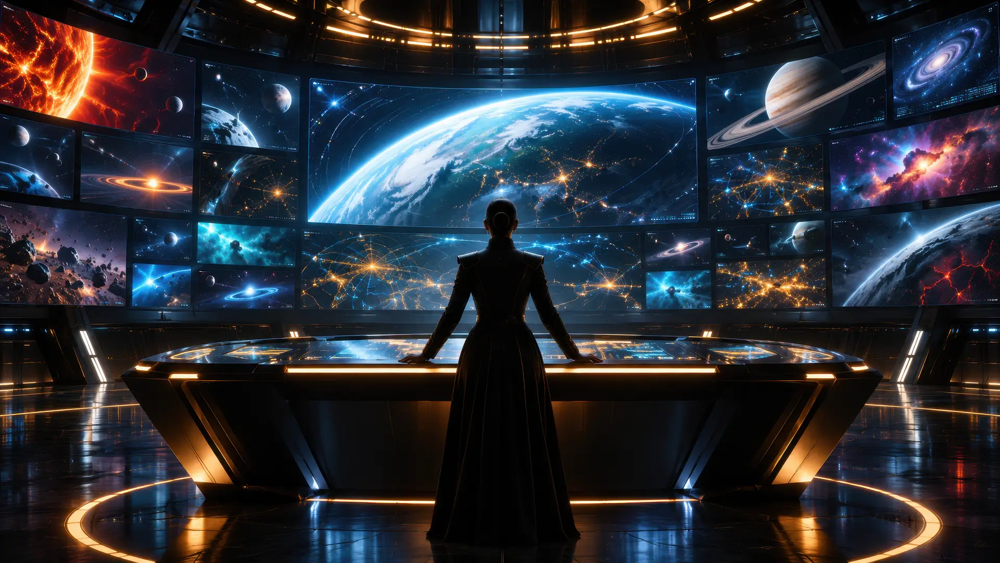

THE QUIET HOURS
Forty-one million agents say everything is fine. One of them is wrong.
6.2 million machines, about 2,400 people, and tonight one of you awake. Find the wrong report before Kirra fires an ore launch it can't call back.
03:12 · HOME, EARTH
The kitchen light is on. Your nearest neighbour is 40 km away.
Across the fleet, the cards are green. Kirra Station, on 16 Psyche, turns amber.
Drill 7 / bearing seized / Shaft 3
Kirra has three people, 40,000 machines and 212 drills. Its agent has a repair plan ready before you finish reading the fault.


THE LAUNCH
120,000 t. One way.
KR-112 carries nickel-iron for the plate around Halcyon's thin ring section 4. There are 312 people aboard.
The trip takes 211 days. The window closes in 38 minutes, and the next is 19 days away. Once the capsule fires, you can't recall it.
KR-112 / Halcyon ring 4 / window open
YOUR WATCH
- Read what the agents did.
- Change what they're doing.
- Say yes or no before the thing you can't undo.
The repair can wait for a person. The launch can't wait long.